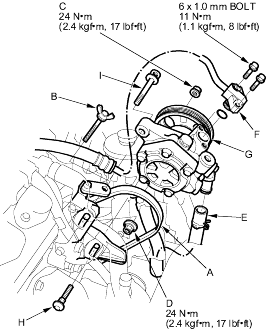
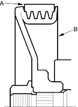

- Place a suitable container under the vehicle.
- Drain the power steering fluid from the reservoir (see page 17-25).
- Remove the belt (A) by loosening the adjusting bolt (B), pump mounting nut (C), and pump locknut (D).

- Cover the A/C compressor with several shop towels to protect it from spilled power steering fluid.
Disconnect the pump inlet hose (E) and pump outlet hose (F) from the pump (G), and plug them. Take care not to spill the fluid on the body or parts. Wipe off any spilled fluid at once. - Remove the adjusting bolt, pump mounting bolt, pump locknut and lock bolt (H), then remove the pump from the pump bracket. Do not turn the steering wheel with the pump removed.
- Cover the opening of the pump with a piece of tape to prevent foreign material from entering the pump.
- Connect the pump inlet hose and pump outlet hose. Tighten the pump fittings securely.
- Loosely install the pump in the pump bracket with the mounting bolt and lock bolt.
- Install the pump belt.
Note these item during belt installation:
- Make sure that the power steering belt (A) is properly positioned on the pulleys (B).
- Do not get power steering fluid or grease on the power steering belt or pulley faces. Clean off any fluid or grease before installation.
